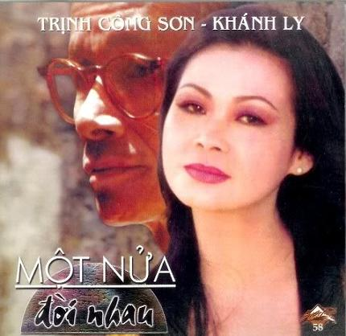

Tôi rất quý một câu thơ của Nguyễn Bắc Sơn trong tập Chiến tranh Việt Nam và tôi: “Men nhạc Trịnh Công Sơn chảy tràn đêm khuya". Cứ ngược cái thời mấy chục năm đêm... dài miền Nam vừa qua, mới thấy sức sống "chảy tràn" của nhạc sĩ Trịnh Công Sơn trong suốt những năm tháng ấy.
Nửa cuối thập niên 1950 - 1960, - giữa lúc dòng nhạc Đoàn Chuẩn đang dần ngưng với Lá đổ muôn chiều, Chiếc lá cuối cùng và Gửi người em gái miền Nam thì dòng nhạc Cung Tiến bắt đầu giao thoa vào với Hương xưa, Thu vàng, Hoài cảm. Tiếp tục giao thoa với dòng âm nhạc Cung Tiến, năm 1958, 19 tuổi đời, Trịnh Công Sơn đã bắt đầu dòng nhạc của mình bằng Ướt mi - một ca khúc mang đậm nỗi buồn Huế. Và sau đó là miên man cho tới nay một cõi âm thanh Trịnh Công Sơn.
Giai đoạn đầu, các ca khúc Trịnh Công Sơn căn bản là tình khúc. Bằng nỗi cô đơn trong trẻo, đầy linh cảm xót xa, mất mát của tuổi đôi mươi, những tình khúc Trịnh Công Sơn khi ấy là lời thốt lên của lớp thanh niên miền Nam sống triền miên trong âu lo, trong phấp phỏng thời cuộc. Đó là những Thương một người, Chiều một mình qua phố, Biển nhớ, Hạ trắng v.v... ở Cuối cùng cho một tình yêu (thơ
Trịnh Cung), tiếng nức nở trào lên một đổ vỡ:
Một lần chia tay,
Một đời bão nổi,
Giã từ giã từ
Chiều mưa giông tới...
Làm sao em biết
Mưa ngoài song bay
Lời ca em nhỏ
Nỗi lòng anh đây...
Trong giai đoạn này, ca khúc Cho một người nằm xuống, đã báo hiệu cho một cái nhìn về chiến tranh. Thân phận những người lính ngã xuống chỉ là một mất mát đời đời:
Anh nằm xuống sau một lần vào viễn du
Đứa con xưa đã tìm về nhà,
Đất hoang vu khép lại hẹn hò...
Báo hiệu này đã dẫn tới những ca khúc phản chiến ở giai đoạn tiếp theo dòng nhạc Trịnh Công Sơn. Nhìn chiến tranh bằng cặp mắt trung thực ở tầm nhân loại, Trịnh Công Sơn đã kêu lên bức bối giữa cuộc đời "nồi da nấu thịt" nơi anh đang sống và chứng kiến:
Một ngày mùa đông hai bên là rừng
Một chiếc xe tang trái mìn nổ chậm
Người chết hai lần thịt da nát tan (Ngụ ngôn mùa đông)
Có lẽ vì cách nhìn như thế nên sau 30-4-1975, Trịnh Công Sơn là nhạc sĩ miền Nam duy nhất lại có thêm nửa khối thính giả ở miền Bắc. Anh đã tạo ra thính giả bằng chất nhạc riêng của mình.
Cũng cần nói thêm rằng sự nghiệp âm nhạc của Trịnh Công Sơn trong thời kỳ này được chắp cánh nhờ giọng hát Khánh Ly. Cuộc trùng phùng này đã để lại một dấu ấn không phai mờ trong lịch sử âm nhạc Việt Nam.
Trịnh Công Sơn bước vào địa hạt làm âm nhạc cho điện ảnh cũng từ sau giải phóng miền Nam. Mười lăm năm trôi qua, anh đã có mặt ở gần hai chục phim truyện cũng như tài liệu. Từ trong những cuốn phim, ca khúc Trịnh Công Sơn lại đĩnh đạc bước vào đời, sống một cuộc sống riêng như những ca khúc khác. Nói đến phim Tội lỗi cuối cùng không ai có thể quên được "Hiền cá sấu”. Không quên "Hiền cá sấu” tức là nhớ Phương Thanh. Nhưng làm cho khán giả nhớ đến nhân vật này, bên cạnh diễn xuất xuất sắc của Phương Thanh, còn có sự trợ giúp đắc lực của ca khúc Đời gọi em biết bao lần được viết ra cách đây một thập niên. Mỗi khi cất giọng hát lẩm nhẩm: "Đi về đâu hỡi em... " tôi lại thấy hiện lên trước mặt một "Hiền cá sấu” với số phận đầy bi kịch.
Cũng nhờ viết nhạc phim mà Trịnh Công Sơn có được một ca khúc thiếu nhi nổi tiếng: Em là bông hồng nhỏ:
Em sẽ là mùa xuân của mẹ
Em sẽ là màu nắng của cha
Em đến trường học bao điều lạ
Môi em cười là những nụ hoa...
Có một đêm hội Gala 87 ở thành phố Hồ Chí Minh, khi đến tiết mục của mình, Trịnh Công Sơn đã “xỉn xỉn", anh hát không được lôi cuốn. Khán giả bắt đầu ồn ào. Đột nhiên, Sơn chuyển sang: “Em sẽ là mùa xuân...”, thế là cả cầu trường Phan Đình Phùng lại dội lên tiếng vỗ tay rầm rập.
Lạ hơn nữa là Trịnh Công Sơn viết nhạc cho cả phim tài liệu về tập võ thuật. Ca khúc Bốn mùa thay lá nhờ thế mà ra đời. Ngày kỷ niệm 60 năm sinh nhật nhạc sĩ Văn Cao, khi nghe anh giới thiệu xuất xứ bài hát, ai cũng ở trạng thái đón đợi một cái gì cứng rắn, gập ghềnh. Nhưng khi Sơn cất giọng lên: “Bốn mùa thay lá, bốn mùa thay hoa...” thì trôi đến với người nghe lại là một âm điệu dịu dàng, mượt mà, tình cảm.
Nếu ở giai đoạn trước là sự song hành của Trịnh Công Sơn với Khánh Ly, thì ở địa hạt âm nhạc cho điện ảnh lại là song hành của Trịnh Công Sơn với Phạm Trọng Cầu. Hai người bạn, hai nhạc sĩ nhiều đồng cảm với nhau luôn cùng có mặt trong từng bộ phim. Tình bạn giữa hai anh tạo nên âm hưởng của mối giao cảm, luồn trong từng phút nhạc.
Gần đây nhất, hồi cuối tháng 3 năm 1990, nhạc sĩ có một cõi âm thanh của hơn ba mươi năm sáng tạo, của gần 500 ca khúc thoắt một cái đã trở thành diễn viên của phim truyền hình do hãng phát thanh truyền hình BBC thực hiện.
Cất đi những phóng túng trong đời sống cũng như trong âm nhạc, Trịnh Công Sơn đã tự khép mình vào kỷ luật của một diễn viên. Anh phải vội vã bay từ thành phố Hồ Chí Minh ra Hà Nội và chỉ ở lại có 16 tiếng để đứng trước ống kính trong một cảnh gặp gỡ nhạc sĩ Văn Cao tại nhà riêng ở số 108 phố Yết Kiêu. Ngay sau đó, anh bay vào Huế để thực hiện một đoạn phim khác trên quê hương xanh ngắt những miệt vườn lá trúc che ngang mặt chữ điền. Rồi lại quay về thành phố Hồ Chí Minh.
Không biết nhạc sĩ có tạo ra được ngôn ngữ điện ảnh trong diễn xuất độc đáo như ngôn ngữ âm nhạc của mình không. Chắc những người vốn mến mộ Trịnh Công Sơn còn phải chờ đợi khi cuốn phim ra đời. Nhưng chắc không ai mong anh lại bỏ âm nhạc để trở thành diễn viên. Vẫn cứ mong cõi âm thanh Trịnh Công Sơn càng ngày càng thăm thẳm.